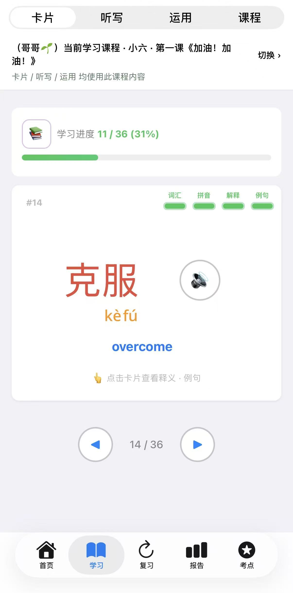
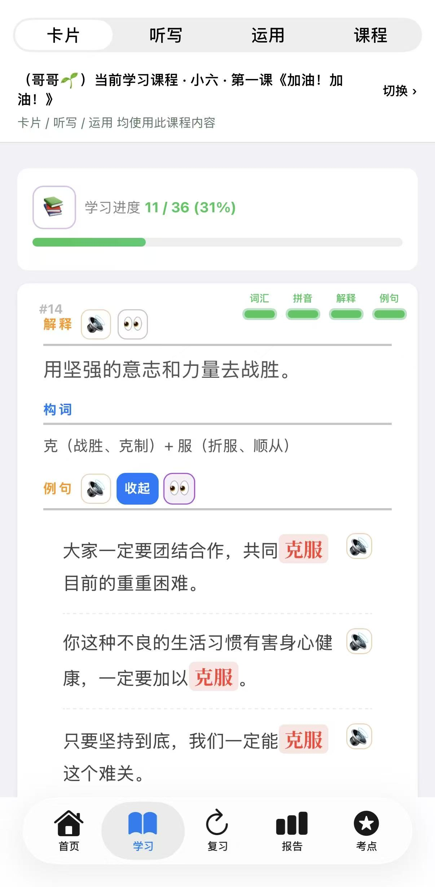
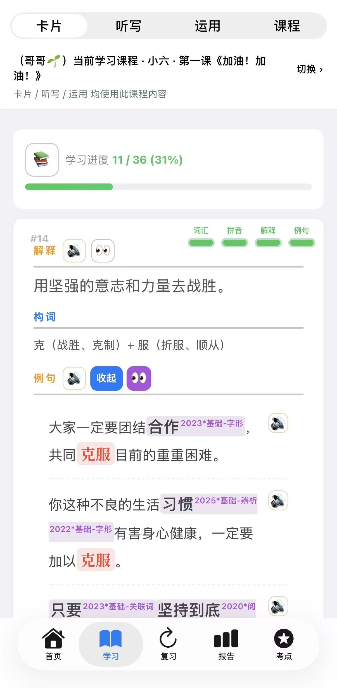
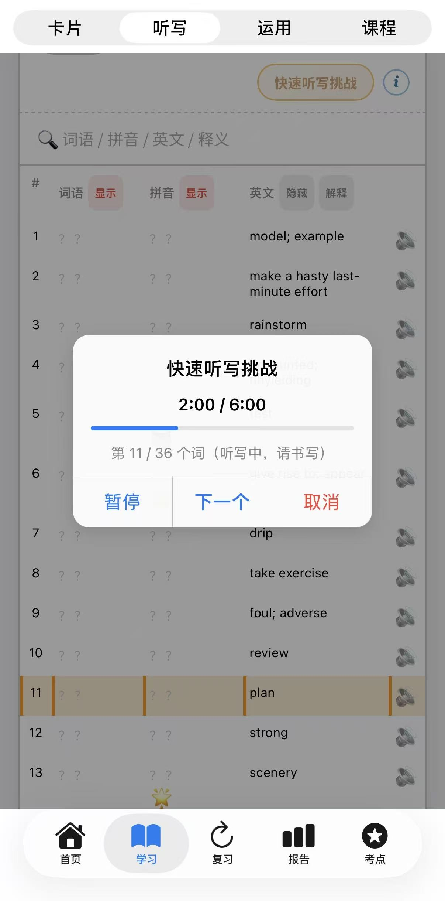
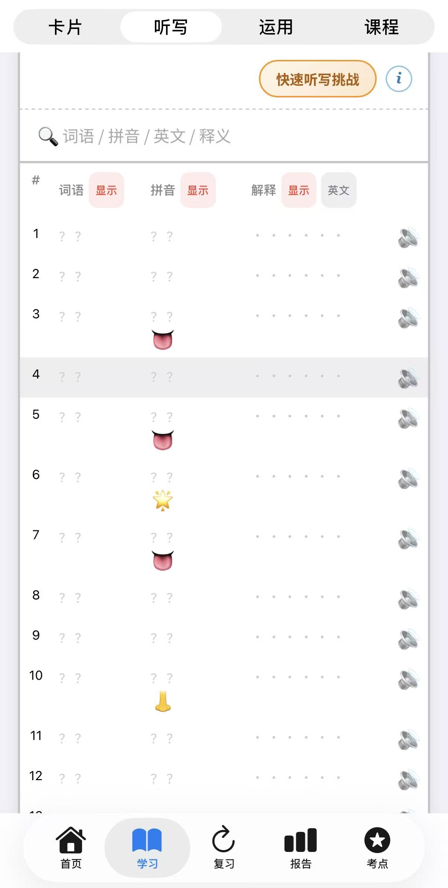
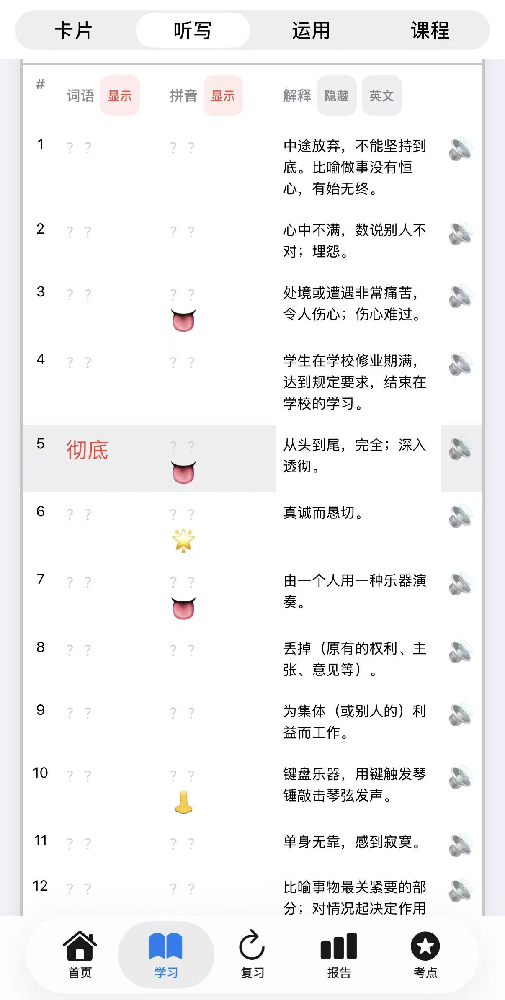
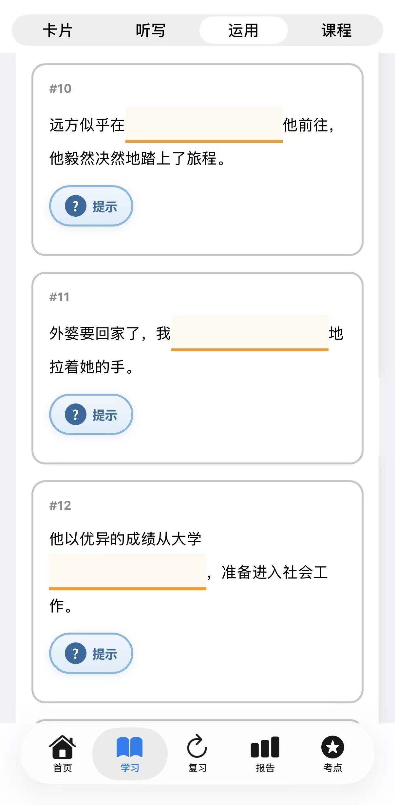
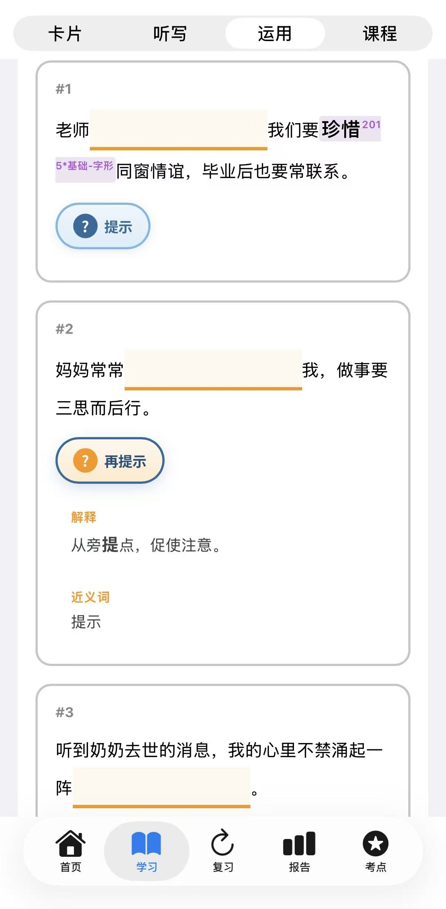

孩子已经加好课程后，可以用三种方式练习同一课词汇。建议按 卡片 → 听写 → 运用 的顺序来学，先认读，再听写，最后在句子里运用，记得更牢。
三种方式都在 「学习」 页面顶部切换，用的是同一门课的词汇：
三步互相配合，比只用一种方式效果更好。你可以在 「报告」→「课程报告」 里查看孩子在卡片和运用上的进度。
| 卡片 | 听写 | 运用 | |
|---|---|---|---|
| 主要做什么 | 第一次学新词，帮助孩子先认识词语，了解读音和意思。 | 通过听写，帮助孩子巩固词音和词形。 | 通过例句填空，引导孩子在句子情境中使用词语。 就像学游泳，不只是看动作，而是下水练习。 词语也是，要放进句子里用，才是真的学会。 |
| 适合什么时候用 | 第一次学新词。 | 会认之后，检验会不会写。 | 认读、听写之后，加深理解。 |
用「卡片」认读



「听写表」用法一览



「运用」与「提示」


第一步：用「卡片」认读
第二步：用「听写」巩固
第三步：用「运用」加深理解